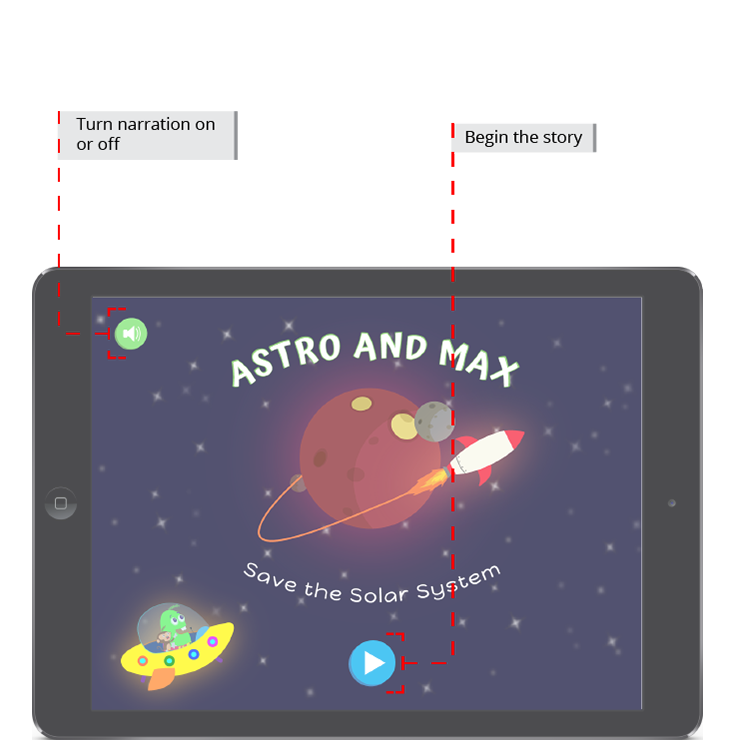
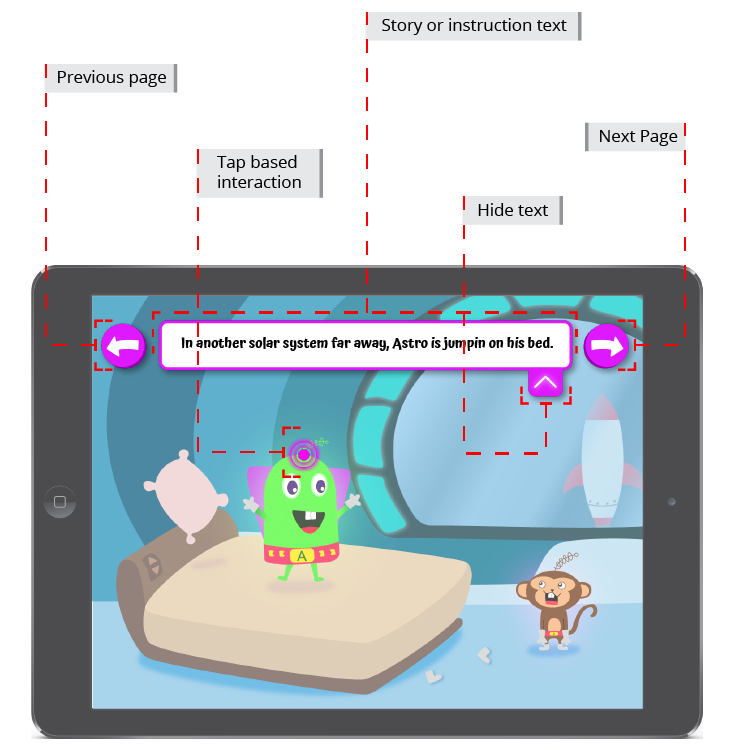
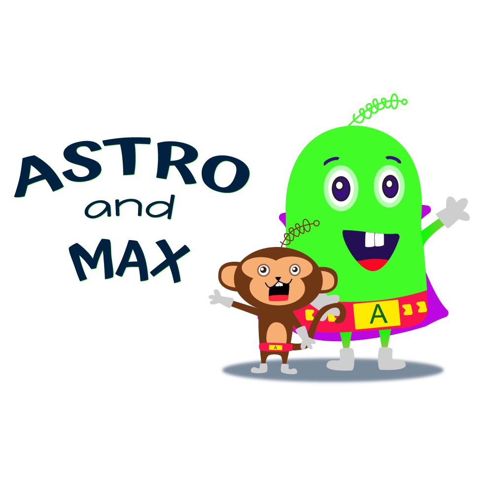

Project Summary:
Astro & Max began as an interactive installation piece in a design jam that sought to teach children about the Solar System in a fun way. Afterwards the team opted to continue with the project in term one of the Master's of Digital Media Program, but pivot into something that parents and children could take home with them to learn. At this point I joined the team and we settled on an interactive storybook application.
Roles and Responsibilities:
UI Designer
As a User Interface Designer I designed and created UI assets that were consistent with the defined art direction. I also conducted competitor research and user testing to identify and implement the best placement and practices for designing interfaces for an interactive storybook.


Graphic Designer
On this project I was also able to experiement with some graphic design and branding. I created three different logos, 1) For the "Astro & Max" brand, 2) For the "Astro & Max Save the Galaxy" interactive story, and 3) For the "Ice Cream Galaxy" team that created the concept and prototype.

UX Design
Additionally, I was very involved in the collaborative User Experience Design process of the team; working on storyboards, user flow diagrams, and conducting user testing.

Astro & Max
Interactive Storybook App
September - December 2016
An interactive story book app for children 5-8 years old that teaches them about about the Solar System.
Role:
UI/UX Designer
Partners
The Centre for Digital Media
Tools:
Adobe Illustrator CC
Sketch
Platform:
iOS/Android Tablet